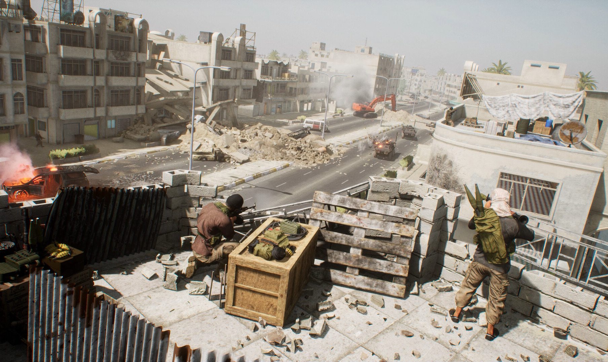
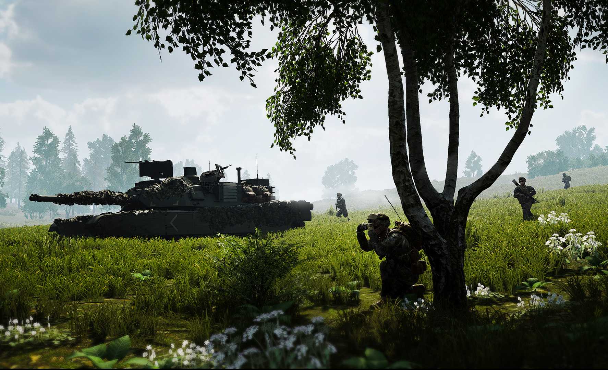
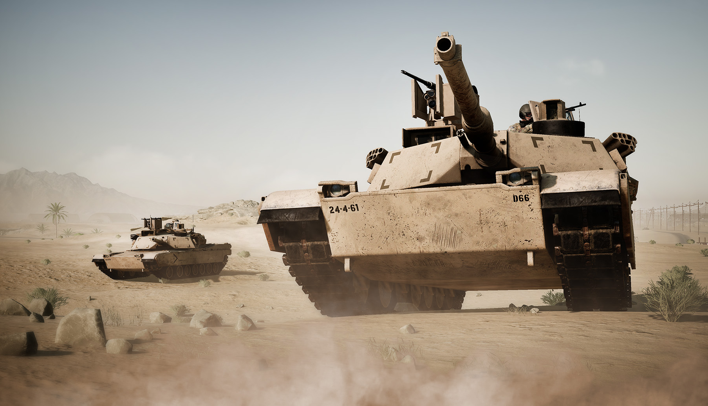

Squad



Squad — это масштабный тактический командный шутер, где победа зависит исключительно от действий отрядов, коммуникации в них и между ними, а так же отграмотного командования.
В одиночку здесь нельзя играть.Тебе нужно строить коммуникацию со своими товарищами, грамотно играть и координировать свои действия с другими игроками.
Здесь нет ничего сложного, первое время я советую тебе присоединяться к более опытным отрядам и играть с ними.Комьюнити Squad дружелюбное и научит играть.
Советы по настройкам:если у вас мощный комп ставьте DLSS:DLAA и все на высокое и не парьтесь. Если среднее но есть поддержка RTX то DLSS:Качество и включайте генерацию кадров, да из за генерации и DLSS будет небольшое мыло но лучше так чем в 20-30 fps. Ну а если слабое и нет поддержки RTX то ставьте на минимальные настройки другого посоветовать я вам не могу. Squad в принципе очень красивая но требовательная игра
Как говорил мой сквадной: "мы будем творить все что угодно лишь бы было весело"